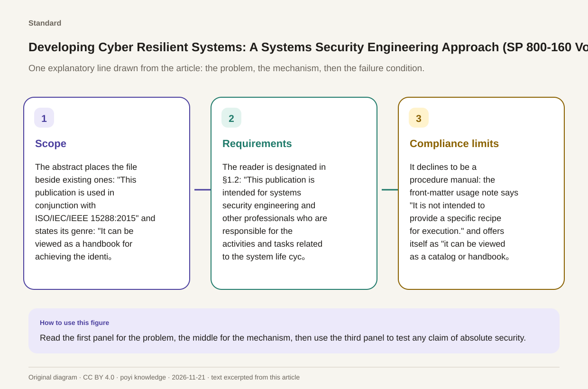
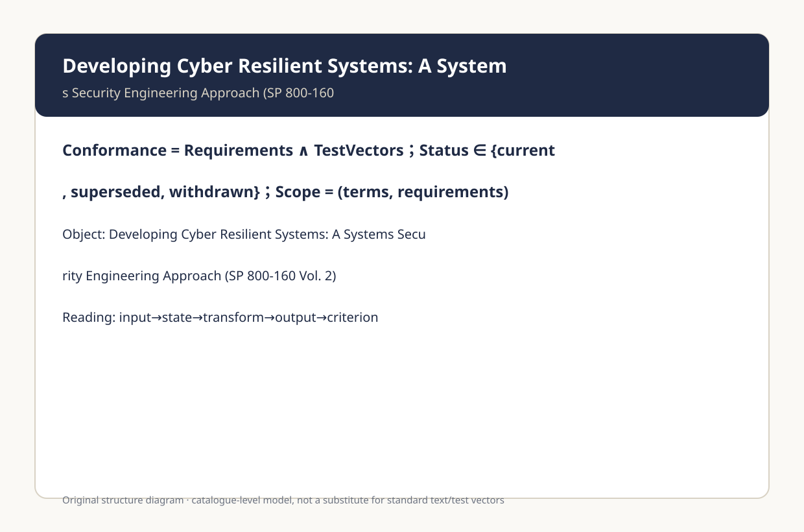

Principles
Standard: Developing Cyber Resilient Systems: A Systems Security Engineering Approach (SP 800-160 Vol. 2) (开发网络弹性系统：系统安全工程方法（SP 800-160 第二卷）). The abstract places the file beside existing ones: "This publication is used in conjunction with ISO/IEC/IEEE 15288:2015" and states its genre: "It can be viewed as a handbook for achieving the identified cyber resiliency outcomes based on a systems engineering perspective on system life cycle processes in conjunction with risk management processes, allowing the experience and expertise of the organization to help determine what is correct for its purpose." Section 1.1 gives its complementary role: "The purpose of this document is to supplement [SP 800-160 v1] and [SP 800-37]". The keyword line closes the subject with "risk management strategy; system life cycle; systems security engineering; trustworthiness."Together the four set the genre and the position: the file is not a standalone standard but a handbook used alongside the life cycle standard and the risk management framework, with the choice among the purpose-level constructs left to the organisation’s own experience.

Why it matters
The premise sits in the front-matter overview: "All discussions of cyber resiliency focus on assuring the mission or business functions and are predicated on the assumption that the adversary will breach defenses and establish a long-term presence in organizational systems." The property sought is "the ability to anticipate, withstand, recover from, and adapt to adverse conditions, stresses, attacks, or compromises on systems that use or are enabled by cyber resources", and the abstract draws the consequence for the reader: "Organizations can select, adapt, and use some or all of the cyber resiliency constructs".Premise and property stated side by side are the argument: if the adversary necessarily gets in and stays, defending a single breach does not assure the mission, and the resiliency constructs are listed for exactly that, to be selected and adapted by the organisation.
Applications
Check the input, key or parameters and output format first, then locate the object in its protocol, standard or engineering workflow; do not treat one example parameter set as the only legal set.

Limits & attacks
It declines to be a procedure manual: the front-matter usage note says "It is not intended to provide a specific recipe for execution." and offers itself as "it can be viewed as a catalog or handbook for achieving the identified cyber resiliency outcomes". Part of the subject is excluded outright: "Second-order effects are beyond the scope of this publication." The force is limited too — the authority paragraph states that "Such information security standards and guidelines shall not apply to national security systems without the express approval of the appropriate federal officials exercising policy authority over such systems.". Finally this very copy has been withdrawn, as the history claim records.
History
The title block carries "NIST Special Publication 800-160" and "Developing Cyber Resilient Systems", with the author line "RON ROSS VICTORIA PILLITTERI RICHARD GRAUBART DEBORAH BODEAU ROSALIE MCQUAID"; the date line is November 2019, the citation reads "Natl. Inst. Stand. Technol. Spec. Publ. 800-160, Volume 2, 229 pages (November 2019)" and the free-access line is followed by the DOI 10.6028/NIST.SP.800-160v2. The withdrawal banner at the head states "The attached publication has been withdrawn (archived), and is provided solely for historical purposes." and records "SP 800-160 Vol. 2 is superseded in its entirety by the publication of SP 800-160 Vol. 2 Revision 1.", the successor being Volume 2 Revision 1 of December 2021 with the DOI 10.6028/NIST.SP.800-160v2r1. The acknowledgements open with the reviewer list: "The authors gratefully acknowledge and appreciate the contributions from DJ Anand, Jon Boyens, Nicolas Chaillan, Ed Custeau, Holly Dunlap, Avi Gopstein, Suzanne Hassell, Bill Heinbockel, Daryl Hild, Scott Jackson, Lauren Knausenberger, Ellen Laderman".Title block, citation line, DOI and banner give this copy’s timeline and standing together: first published November 2019, withdrawn 9 December 2021, superseded in full by Volume 2 Revision 1, and retained here for historical reference only.
Worked example & verification
Formal model and reproduction steps
[S=\min_i S_i,\quad S_i\in{\text{密钥强度},\text{分组安全},\text{实现安全}}]
Developing Cyber Resilient Systems: A Systems Security Engineering Approach (SP 800-160 Vol. 2): the registered public parameters, key material or randomness, and message are mapped through the stated transformation to an output checked against the registered criterion. The worked example is a structural reproduction, not a new test vector; parameter ranges, standard versions and implementation details remain source-bound.
References
- Wikipedia search entry for 开发网络弹性系统：系统安全工程方法（SP 800-160 第二卷）. https://zh.wikipedia.org/w/index.php?search=%E5%BC%80%E5%8F%91%E7%BD%91%E7%BB%9C%E5%BC%B9%E6%80%A7%E7%B3%BB%E7%BB%9F%EF%BC%9A%E7%B3%BB%E7%BB%9F%E5%AE%89%E5%85%A8%E5%B7%A5%E7%A8%8B%E6%96%B9%E6%B3%95%EF%BC%88SP%20800-160%20%E7%AC%AC%E4%BA%8C%E5%8D%B7%EF%BC%89
- Handbook of Applied Cryptography (Menezes, van Oorschot, Vanstone). https://www.cacr.math.uwaterloo.ca/hac/